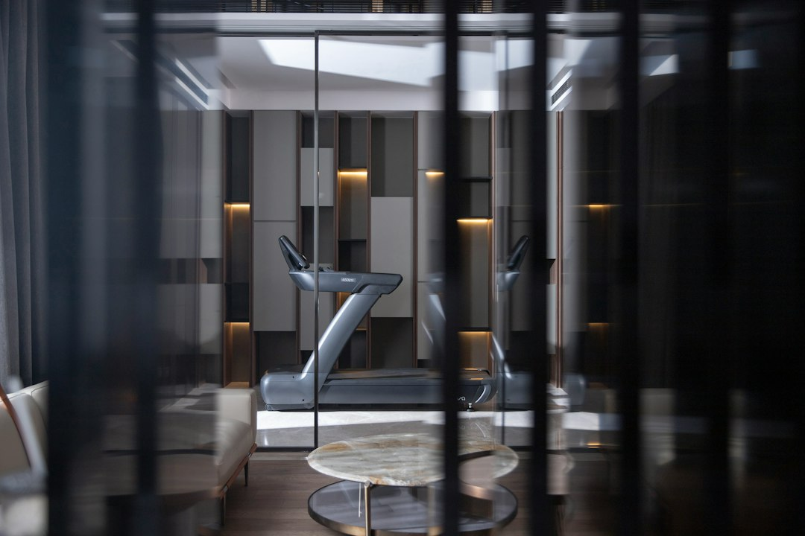

Guida Operativa: Riduci Costi e Tempi di Rendering con Forma & Materia

Come Eliminare i Costi e i Ritardi nei Render: La Guida Operativa per Architetti e Designer
- Riduzione dei costi di rendering da 500€ a tavola a meno di 100€.
- Tempo di consegna passato da 5 giorni a 20 secondi per variante.
- Presentazione in tempo reale al cliente grazie al motore neurale 4K.
Analisi approfondita della notizia e delle implicazioni operative
Negli ultimi mesi, le testate di settore hanno evidenziato un incremento significativo delle spese legate ai servizi di rendering esterno. Gli studi di progettazione, soprattutto quelli di medie dimensioni, si trovano a dover sostenere costi fissi di circa 500 € per ogni tavola di render, con tempi di consegna che si aggirano intorno ai cinque giorni lavorativi per ogni variante. Questo modello tradizionale penalizza la competitività, limita la capacità di risposta al cliente e genera un carico gestionale eccessivo per i responsabili di progetto.
Dal punto di vista operativo, il flusso tipico prevede la creazione di schizzi o piante, l’invio a un renderista esterno, l’attesa di feedback, l’eventuale revisione e il re‑invio. Ogni ciclo aggiunge complessità, costi di comunicazione e, soprattutto, rallenta la fase decisiva di vendita, dove la capacità di mostrare un progetto in tempo reale è ormai un requisito imprescindibile.
Le conseguenze e i costi di non agire
Ignorare questi problemi significa continuare a pagare cifre elevate per ogni render, con un impatto diretto sul margine di profitto. Un progetto medio di 10 tavole può generare una spesa di 5 000 €, senza contare le ore di gestione amministrativa e le eventuali correzioni successive. Inoltre, l’attesa di cinque giorni per ogni variante riduce drasticamente la velocità di chiusura delle trattative, facendo perdere opportunità di business a concorrenti più agili.
L’impossibilità di mostrare modifiche al cliente dal vivo comporta anche un deterioramento della percezione di professionalità. I clienti moderni si aspettano interazioni immediate, visualizzazioni in alta definizione e la possibilità di sperimentare soluzioni alternative sul momento. Quando lo studio non è in grado di soddisfare queste aspettative, aumenta il rischio di abbandono del progetto o di richieste di sconto, erodendo ulteriormente il fatturato.
Come Forma & Materia risolve il problema
Forma & Materia, il nuovo SaaS di RM Studio, introduce un motore neurale di rendering 4K capace di trasformare schizzi a mano libera, piante e disegni CAD in render fotorealistici in soli 20 secondi. La tecnologia interpreta automaticamente note, frecce e annotazioni scritte a penna, preservando la geometria originale e garantendo coerenza con il progetto originale.
Grazie a questa soluzione, gli studi possono eliminare i costi di 500 € per tavola, passando a un modello di prezzo fisso: un progetto singolo a 99 € (6 render) o l’abbonamento Atelier Pro a 249 € (20 render 4K). Il tempo di attesa si riduce da giorni a pochi secondi, consentendo di mostrare modifiche al cliente in tempo reale durante le riunioni, migliorando l’esperienza di vendita e accelerando la chiusura dei contratti.
Inoltre, la piattaforma è accessibile via web, senza necessità di installare hardware costoso. Il flusso di lavoro si integra direttamente con i principali software CAD, permettendo di importare file con un click e di esportare i render in formati pronti per la presentazione o per la stampa.
| Gestione Tradizionale | Con Forma & Materia |
|---|---|
| Costo medio 500 € per tavola | Costo fisso 99 € per 6 render o 249 € per 20 render |
| Tempo di consegna 5 giorni per variante | Tempo di rendering 20 secondi per variante |
| Comunicazione esterna, ritardi e revisioni | Workflow interno, revisione in tempo reale |
| Dipendenza da terzi, rischio di blocchi | Autonomia completa, nessun terzo coinvolto |
💡 Ti è stato utile questo approfondimento?
Condividilo con un collega o un amico del settore Architetti, Interior Designer, Geometri, Ingegneri Edili e Studi di Progettazione a cui potrebbe interessare!
FAQ
1. Quanto tempo serve per ottenere un render con Forma & Materia? Il motore neurale genera un render fotorealistico in circa 20 secondi, indipendentemente dalla complessità del disegno.
2. È necessario avere competenze avanzate di modellazione 3D? No. La piattaforma accetta schizzi a mano libera, piante e file CAD, interpretando automaticamente le note e le frecce.
3. Qual è la differenza tra il piano Progetto Singolo e Atelier Pro? Il piano Singolo offre 6 render a 99 €, ideale per piccoli progetti o test; Atelier Pro fornisce 20 render 4K a 249 €, consigliato per studi con volume medio‑alto di richieste.
Inizia Subito
Progetto Singolo da €99 (6 render) o Atelier Pro a €249 (20 render 4K). 1 Render di prova gratuito su https://formamateria.rmstudio.app/studio
Fonti Ufficiali e Risorse Esterne
Scopri l'Intelligenza Artificiale per la tua attività
Ottimizza i processi e aumenta le vendite con le soluzioni B2B di RM Studio.
Scopri Forma & Materia